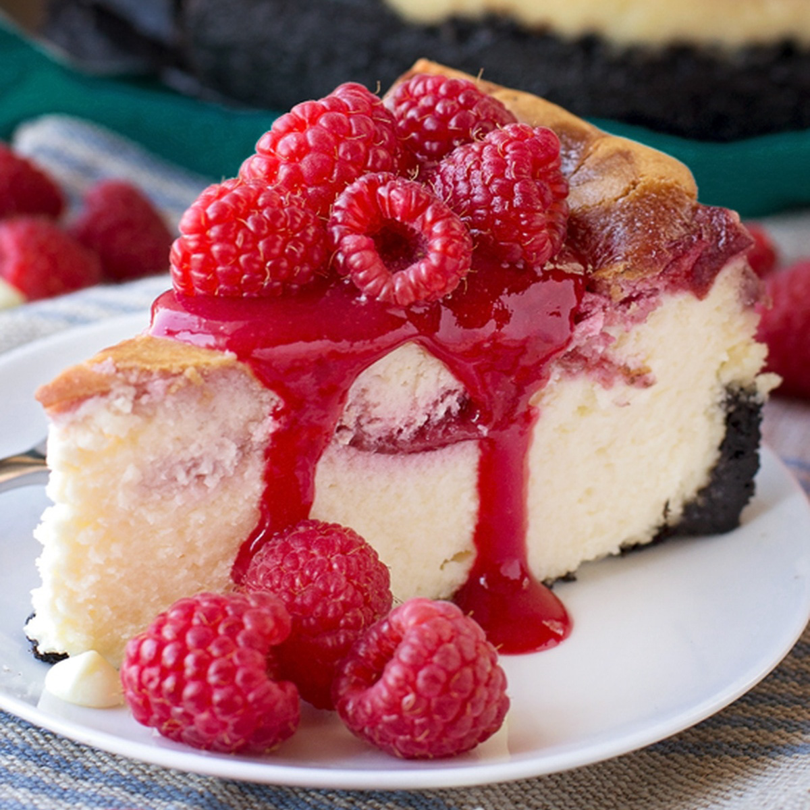
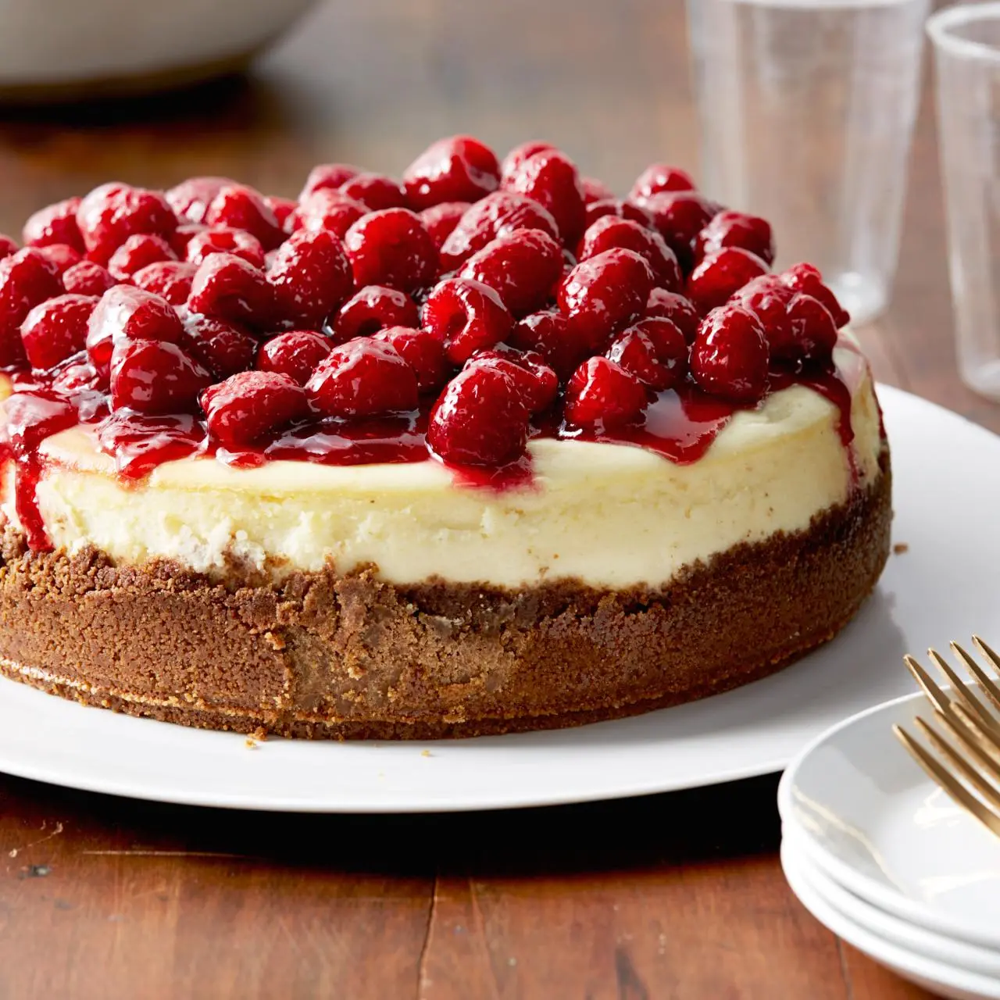
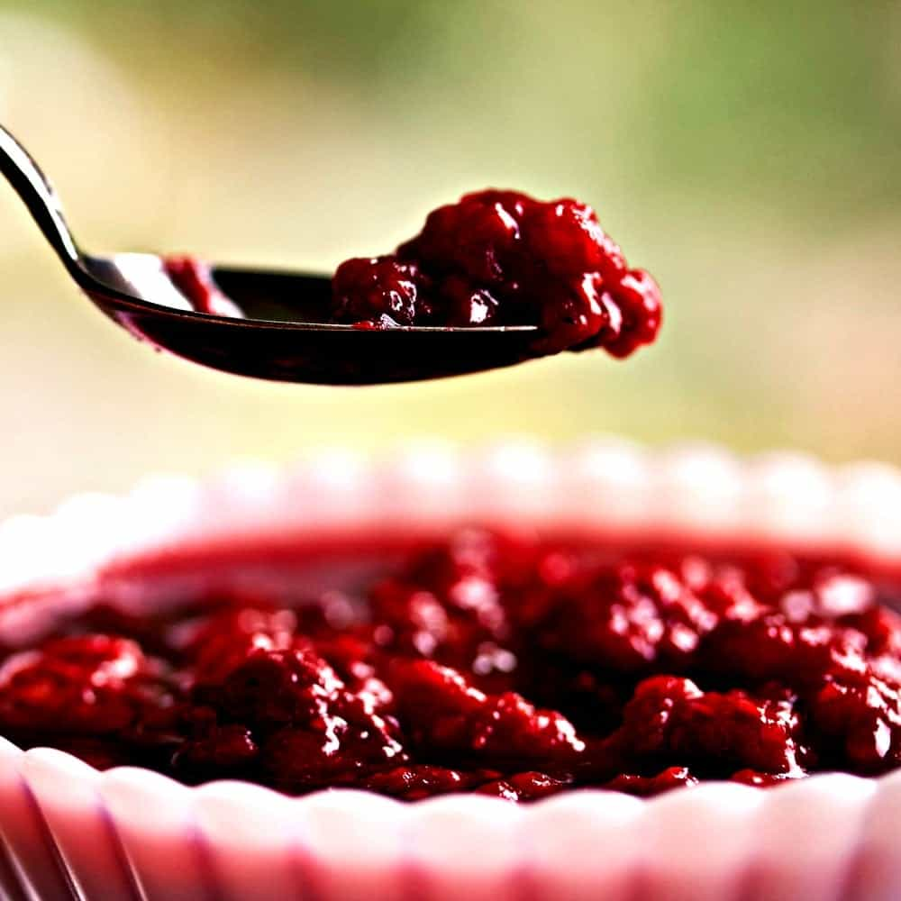

Cheesecake Recipe
Ingredients
For the crust:
- 1 1/2 cups graham cracker crumbs (10 crackers)
- 1 tablespoon sugar
- 6 tablespoons (3/4 stick) unsalted butter, melted
For the filling:
- 2 1/2 pounds cream cheese, at room temperature
- 1 1/2 cups sugar
- 5 whole extra-large eggs, at room temperature
- 2 extra-large egg yolks, at room temperature
- 1/4 cup sour cream
- 1 tablespoon grated lemon zest (2 lemons)
- 1 1/2 teaspoons pure vanilla extract
For the topping:
- 1 cup red jelly (not jam), such as currant, raspberry, or strawberry
- 3 half-pints fresh raspberries
Directions
- Preheat the oven to 350 degrees F.
- To make the crust, combine the graham crackers, sugar, and melted butter until moistened. Pour into a 9-inch springform pan. With your hands, press the crumbs into the bottom of the pan and about 1-inch up the sides. Bake for 8 minutes. Cool to room temperature.
- Raise the oven temperature to 450 degrees F.
- To make the filling, cream the cream cheese and sugar in the bowl of an electric mixer fitted with a paddle attachment on medium-high speed until light and fluffy, about 5 minutes. Reduce the speed of the mixer to medium and add the eggs and egg yolks, 2 at a time, mixing well. Scrape down the bowl and beater, as necessary. With the mixer on low, add the sour cream, lemon zest, and vanilla. Mix thoroughly and pour into the cooled crust.
- Bake for 15 minutes. Turn the oven temperature down to 225 degrees F and bake for another 1 hour and 15 minutes. Turn the oven off and open the door wide. The cake will not be completely set in the center. Allow the cake to sit in the oven with the door open for 30 minutes. Take the cake out of the oven and allow it to sit at room temperature for another 2 to 3 hours, until completely cooled. Wrap and refrigerate overnight.
- Remove the cake from the springform pan by carefully running a hot knife around the outside of the cake. Leave the cake on the bottom of the springform pan for serving.
- To make the topping, melt the jelly in a small pan over low heat. In a bowl, toss the raspberries and the warm jelly gently until well mixed. Arrange the berries on top of the cake. Refrigerate until ready to serve.
- Note: Measure your springform pan. The bottom of mine measures 9 inches, but it says 9 1/2. I put the springform pan on a sheet pan before putting it in the oven to catch any leaks.
Sample Imagery



Recipe Websites
Food Network
Overall, I really like the layout and look of this website. The information is very clear and straightfoward, making it very user friendly. The visual design is very simple and minimal.
Sugar Spun Run
One thing I like about this website is the inclusion of photos to go along with the written directions. This allows the user to gtet a better understanding of what each step should look like. One thing that does not work well is there is a lot of text before the recipe and ingredients list.
A Farmgirl's Dabbles
This website, similar to Sugar Spun Run, has too much text and images before the straigh-forward instructions. This makes it hard for readers to get to the information they are looking for.
Non-Recipe Websites
Patagonia
Patagonia is a useful reference for combining photos with concise text. The site's use of images and colors helps establish a mood and make its content more compelling. These techniques would make my recipe feel less like a list and more like a purposeful presentation.
Braggs
Bragg’s website does a great job of incorporating interactive elements, such as hover effects and images that move onto the screen as you scroll. Adding similar movement and interactive elements to my recipe could make the page more engaging and encourage readers to interact with the content.
Heath Ceramics
Heath Ceramics' website utilizes simplicity, warm color palletes, and grids. There information is very well organized and often follow a grid-like layout. It makes their website very easy to read and navigate. I also enjoy their warm color pallete as it gives the website a more artisanal and sophisticated feeling.